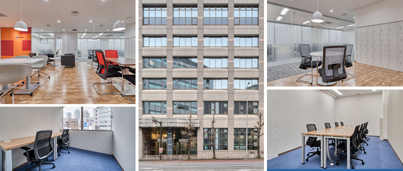
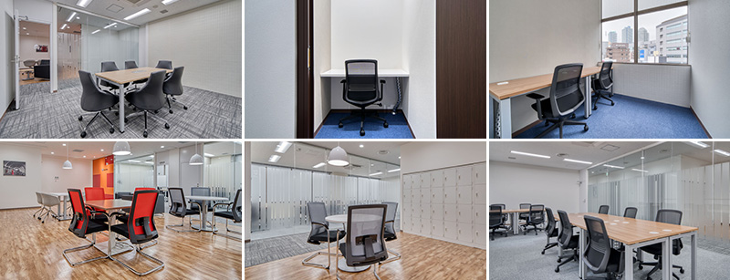
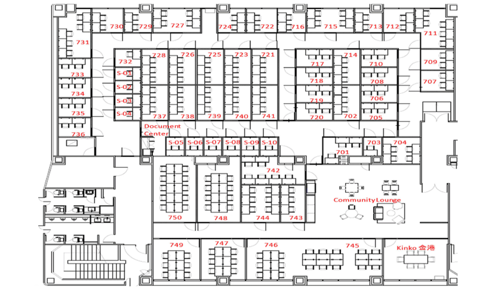

横浜金港町のレンタルオフィス｜Openoffice：東京・大阪をはじめ全国に50拠点以上
- 【個室レンタルオフィス】オープンオフィス HOME
- オープンオフィス横浜金港町
【個室レンタルオフィス】オープンオフィス 横浜金港町
オープンオフィス横浜金港町センターは、横浜駅きた東口より徒歩5分、国道1号線に面する金港ビルの7階というロケーションです。このエリアは、高層オフィスや横浜ベイクォーターなどの商業施設が建ち並ぶヨコハマポートサイド地区に隣接しており、日本を代表する家電メーカーやシステム開発会社が拠点を構えています。横浜駅西口エリア、みなとみらいエリアと並ぶ横浜屈指のビジネスエリアのひとつです。

オープンオフィス横浜金港町周辺のMap
オープンオフィス横浜金港町の住所・アクセス
住所:
神奈川県横浜市神奈川区金港町7-3 金港ビル7F
空港からのアクセス:
羽田空港より京急線「横浜駅」まで約25分羽田空港よりリムジンバスで「横浜シティ・エア・ターミナル」まで約25分
成田空港よりリムジンバスで「横浜シティ・エア・ターミナル」まで約85分
電車からのアクセス:
JR、京急線、東急東横線、みなとみらい線、相模鉄道、地下鉄ブルーライン「横浜」駅きた東口より徒歩5分京急線「神奈川」駅より徒歩2分
お車でのアクセス：
横浜駅東口、国道1号線沿い 「青木通」交差点至近オープンオフィス横浜金港町の特長
- 人気のビジネスエリア横浜駅東口
- ヨコハマポートサイドに隣接
- 羽田空港へもダイレクトアクセス
- 支店・営業所としても最適なロケーション
- 働き方改革の実践

オープンオフィス横浜金港町のフロアマップ

※フロア内は禁煙です。
※こちらはイメージ図となりますので、状況が異なる場合は現況を優先させていただきます。
| ◆初回納入金 | 利用料1ヶ月分の保証金 |
|---|---|
| ◆共益費 | 水道光熱費、ビル共益費、ゴミ出し、フロア・トイレの清掃、共有部分の消耗品代を含みます。 |
オープンオフィス横浜金港町が提供するオフィスサービス
-

高速インターネット
-

カラーレーザーコピー
専用のカードでコピーが出来ます -

ICカードキー
セキュリティを向上させています -

ミーティングルーム
インターネットで予約していただけます -

Wi-Fi完備

ネットワークプリンタ・スキャナ部屋のパソコンで操作できます
オープンオフィス横浜金港町近隣のスポット
銀行
横浜銀行 横浜駅前支店
三井住友銀行 横浜駅前支店
あおぞら銀行 横浜支店
みずほ銀行 横浜駅前支店
レストラン
日本料理 桂川 （会席）
スカイラウンジ ベイ・ビュー （フレンチ）
中国料理 彩龍 （中国料理）
カンブーサ （イタリアン）
ホテル
ヨコハマグランドインターコンチネンタルホテル
横浜ベイホテル東急
横浜ロイヤルパークホテル
横浜ベイシェラトンホテル＆タワーズ
レジャー
JOYFIT24 横浜平沼橋
エニタイムフィットネスみなとみらい店
映画館
イオンシネマみなとみらい
リージャスグループのご案内
リージャス・グループは、柔軟なワークスペースを提供する世界最大の企業です。そのネットワークは世界120カ国1,100都市、3300拠点に及びます。会員数は250万人で、業界で成功を収める大小様々な企業や起業家の方々にご利用いただいています。
リージャスは、個室タイプのレンタルオフィス、コワーキングスペースなど多彩なオフィスプラン、近年需要が高まるモバイルワークやバーチャルオフィス、障害復旧サービスの提供を通じ、お客様が予算やワークスタイルに合わせて仕事を行うことができる環境を提供いたします。